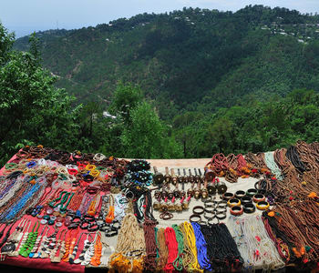
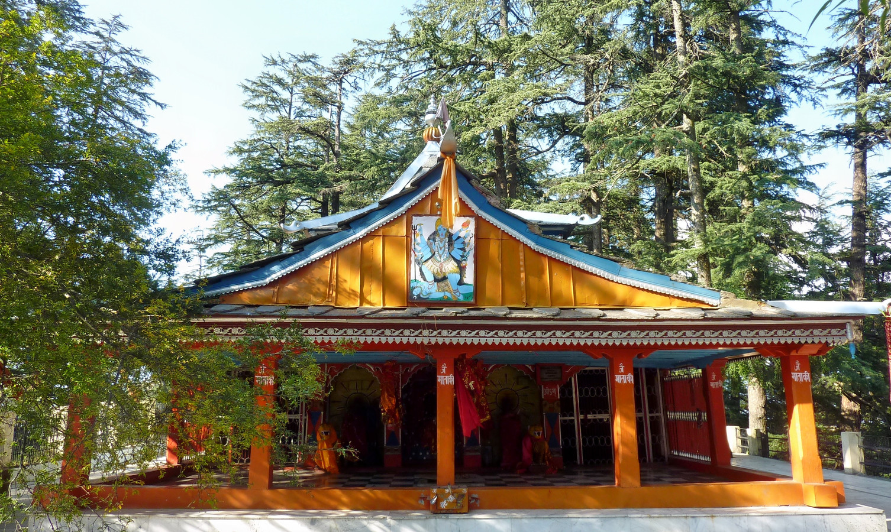

NarkandaGeneralGeographyClimateFloraDemographicsCulture
Culture
Although being a major destination for adventurous explorers, this town has remained aloof to commercialization and urbanisation. This keeps its essence and beauty intact, along with its culture and heritage. Exclusive to Narkanda is its folk culture. Bakayang dance, Kayang dance, jataru Kayang dance, Bnayangchu dance and Rasa dance are the folk dances which you will you will witness only in this part of the world. Music is the soul of any place and the music in Narkanda is dominated by an array of authentic instruments like Ektara Chimta, Flute, Ghungroo, Manjara, Ghariyal, etc. This town is famous for its indigenous music. Sung by the locals with their heart and soul, this music is absolutely pleasant to hear. In the true secular style, you will see the inhabitants celebrating Diwali and Holi with as much zeal as they would celebrate Christmas or Lohri with. Along with nature, this town has been gifted with art too. Bamboo items and metal artefacts and jewellery made by the tribes of this area, are world-famous. You can take beautiful souvenirs with you, back home. The cuisine of this little town has a pure Himachali influence, with simple, lip-smacking dishes. Their meaty delights are spicy, to suit the weather conditions.
